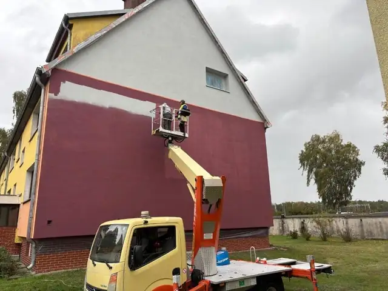
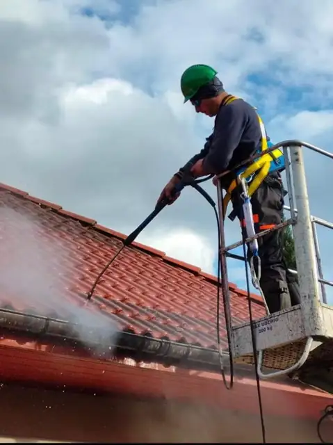
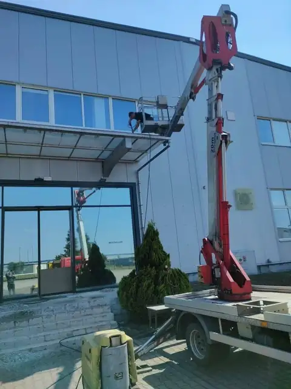
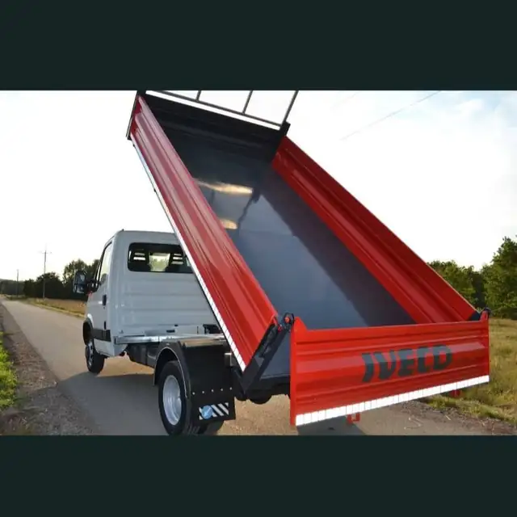
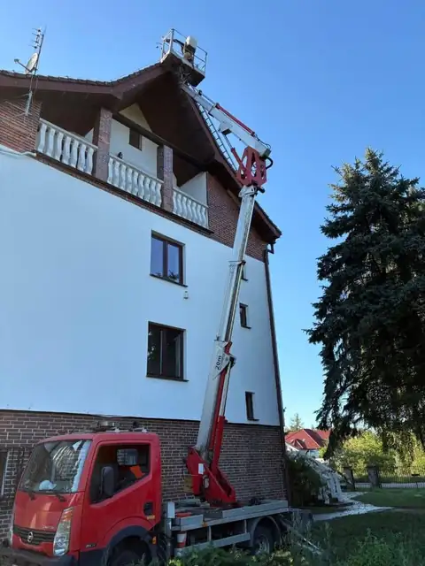
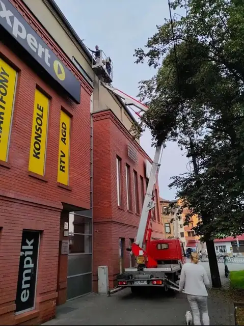
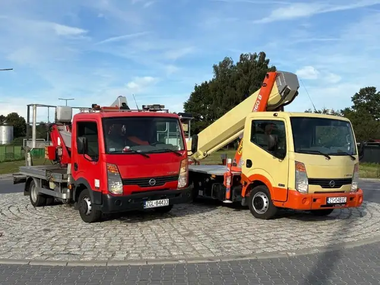
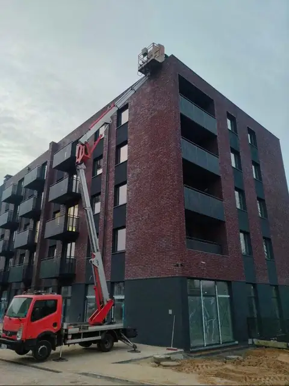
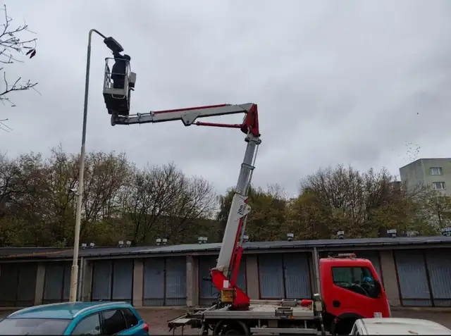
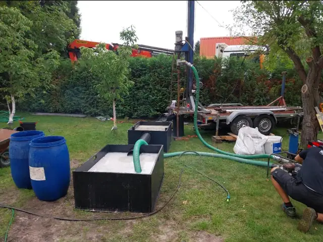

Mycie elewacji
Mycie ciśnieniowe elewacji domów, bloków i obiektów firmowych.
Szczecin · Kliniska · Goleniów
Szczecin · Kliniska · Goleniów
Pełna lista — ta sama oferta co na stronie głównej.
Mycie ciśnieniowe elewacji domów, bloków i obiektów firmowych.

Malowanie elewacji domów i bloków bez rusztowań — z kosza podnośnika.

Czyszczenie i malowanie dachów z podnośnika — bezpiecznie i dokładnie.

Mycie kostki brukowej i nawierzchni — podjazdy, chodniki, place.

Karczowanie działek oraz zrąbianie rębakiem Lezard R25 — rozdrabnia kołki do 15 cm.

Wywóz materiałów i odpadów wywrotką do 3,5 t.

Kontrolowane ścinanie drzew z kosza — przy budynkach i w trudnym terenie.

Czyszczenie rynien i obróbek dachowych z kosza podnośnika — bez rusztowań.

Wynajem podnośników z operatorem na godziny — 20 m i ~26 m.

Mycie elewacji i ścian hal produkcyjnych oraz obiektów przemysłowych.

Mycie okien i witryn na wysokości z kosza podnośnika — bloki, biura, obiekty firmowe.

Montaż i demontaż reklam, banerów i oznakowań na elewacjach — szybko i bezpiecznie.

Skracanie i formowanie wysokich żywopłotów z kosza — równo i bez rusztowań.

Wsparcie montażu paneli PV na dachach — podawanie i prace na wysokości z podnośnika.

Prace przy kominach i na krawędzi dachu z kosza podnośnika — bezpiecznie, bez rusztowań.

Podnoszenie materiałów do 200 kg na dach lub balkon — bez noszenia po schodach.

Wymiana lamp ulicznych, parkowych i oświetlenia na wysokości z kosza podnośnika.

Prace budowlane i montażowe na elewacjach oraz dachach — z kosza do 26 m.

Wiercenie studni głębinowych sprzętem mobilnym — także na działkach i w ogrodach.
Podaj adres i zakres — oddzwonimy z terminem.